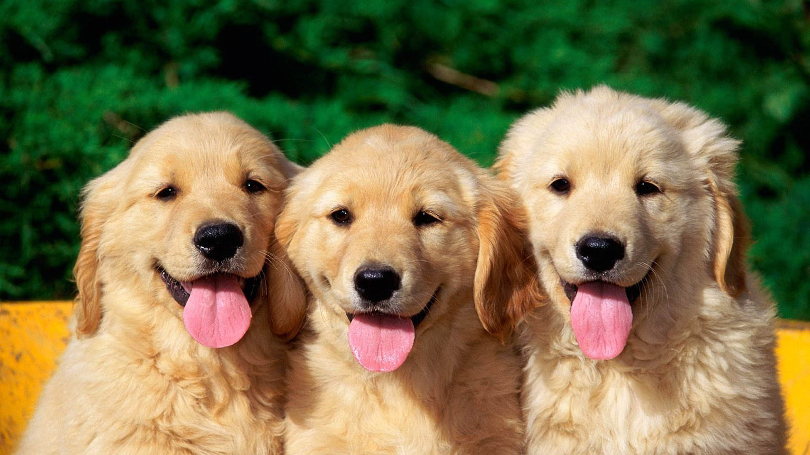

Известни развъдници

Тук може да откриете развъдници за различни породи домашни животни.
Чихуахуа
FCI Kennel "RABENA YEKHALY KELABY" - Развъдник за късокосмести и дългокосмести Чихуахуа работещ с
руски , унгарски и български кръвни линии. Развъдникът набляга главно на БЕЛИЯ цвят при породата.
Контакти: тел. 0879850395, e-mail: fashiondog@dir.bg
Добермани
iz Ongal - Развъдникът датира от 1997г., като до момента кучетата му са носители на многобройни
титли. След участието си в изложбата на IDC (Италия), развъдникът слага началото на българското участие в
мероприятие на Международния Доберман Клуб.
Контакти: тел. +359888 564 083
Булдози
Random Allure - Лицензиран развъдник за Английски булдог и Китайско качулато куче
Контакти: тел. +359 89 963 6554, e-mail: catenceto@yahoo.com , skype: bulldogsbg
Йоркширски териери
YorkBG - Тук можете да видите снимки на някои от нашите йорки, информация за породата и други
полезни неща. Нашите йоркшири териери са с кръвни линии на едни от най-известните развъдници – Camparis,
Durrer’s, Galop du Globe, Qoccles, а в резултат на дългогодишна селекция и контролирани връзки с приоритет
миниатюризиране на породата, успяхме да създадем уникални като размер и тегло йоркширчета - едни от
най-малките в света. Контакти: гр. София, тел. 089 852 39 25
Yorkibows - В развъдната програма e заложено на подбрани екземпляри с тегло за мъжките не повече
от 2,500кг. и за женски не повече от 3кг. и височина не повече от 22см. Сладката муцунка с големи очички
е приоритет. Цел и огромно удовлетворение е хората да се радват на красиви и здрави кученца.
Контакти: гр. Варна, тел. 0896812240, 052 569738
Немски овчарки
Von Kostinbrod - Развъдник Von Kostinbrod се занимава професиално с отглеждане на елитни немски
овчарски кучета от 1983 година. Член е на Българско обединение за германски овчарски кучета /БОГОК/ от
1993 година. Контакти: гр. Костинброд, тел. 0896 679547
von der "Alexander" - Развъдника е основан през 1999 г. от Александър Димитров и негови представители
са редовни участници в състезания и изложби. Контакти: гр. София, тел. 0878 466 514 0895 227 666
von Daron - В сайта на развъдника von Daron ще намерите информация за спецификацията на породата
"Немската овчарка", галерия със снимки, видео и информация. Контакти: Банкя, ул. "Владо Марков" 4,
тел. 0899 815 514, 02 997 6858
vom Wolpertinger Wald - Развъдник за Германско овчарско куче официално регистриран в FCI
на 29.01.2007. Целта ни е да развъждаме здрави,работоспособни и типични представители на породата!
Контакти: тел. 0897930313; e-mail - milena.kirchner@gmail.com
Голдън ретривър
Lorindely kennel - развъдник за чистопопородно развъждане на кучета от породата Голдън ретривър,
регистриран в FCI. Информация може да получите на интернет страницата ни www.lorindelybg.webs.com
Ротвайлери
"Босилек" - FCI №46\99. Развъдникът е създаден през 1988г. с внасянето в България на първите две
кучета от тази порода от бившата Чехословакия. Контакти: гр. София, тел. +359 2 8681 983, +359 899 822 682
Assasin - В сайта ще намерите информация за кучетата в развъдника от породата "Ротвайлер", новини
и полезни връзки свързани с тази порода. Контакти: гр. София, тел. 089 78 79 047, 089 44 56 950
AllegroDivace - Развъдник за ротвайлери в град Пловдив регистриран през 2005 година. Следвайки
традициите на чистопородното развъждане на ADRK и НКР ние ще се стремим кученцата родени при нас да бъдат здрави
физически и с добър характер, за да носят радост на новите си стопани. Контакти: гр. Пловдив, тел. 0887 243 670
Mitov - В развъдника за ротвайлери "MITOV" със седалище Благоевград са внесени кучета от признати в
света имена, в отглеждането и развитието на тази порода. Всички наши кучета използвани за разплод, спазват
стриктно изискванията на ADRK и NKR: рентгеново изследване на тазобедрени стави - HD и лакътни стави - ED,
защитили са изпит за куче придружител - BH и изпит за развъдна годност - ZTP. Контакти: гр. Благоевград, 2700
Петко Д. Петков N8, тел.: 0889 624 390
Българско овчарско куче
Калоян Елит - Развъдници за българско овчарско куче продават малки и големи кучета с доказан произход.
Собственците на развъдниците са членове на БКК за БОК. Цени: По договаряне. Заинтересуваните може да пишат и на
мен на e-mail : boikasliven@abv.bg , поемам ангажимент да се свържа със собствениците и да ви отговоря на въпросите
Контакти: гр. Банкя, тел. 0888456619, 0896712447
Ирландски вълкодав
Филипополис - развъдник за ирландски вълкодав в град Пловдив. Продата има двухилядолетна история с
много древен античен произход. Контакти: гр. Пловдив, тел.: + 359 898 220 741
Епаньол Бретон
Развъдник Бендида е създаден с амбицията да популяризира и развива породата епаньол бретон. Основната
цел поставена пред развъдника е да поддържа и произвежда кучета с отлични работни и екстериорни качества, които
да донесат много радост и гордост на почитателите и собствениците на обичаната от нас порода. На сайта ще намерите
информация за историята на породата и на най-титулувания епаньол бретон Меги-Зина. Контакти: гр. София до 840-8318;
0888722557; 0888729557